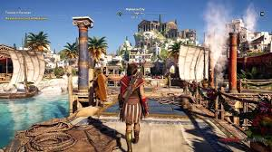
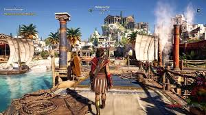

Assassin's Creed Odyssey
Historia
Assassin's Creed Odyssey te lleva al corazón de la antigua Grecia durante la Guerra del Peloponeso.
El jugador controla a Alexios o Kassandra, descendientes de Leónidas, en una épica aventura para descubrir su pasado.
La narrativa se basa en elecciones que afectan el desarrollo del juego y el destino de los personajes.
El mundo abierto permite explorar islas, ciudades y ruinas clásicas con libertad.
La historia combina mitología griega, política y drama personal para crear una experiencia envolvente.
- Alexios o Kassandra
- Leónidas
- Diógenes
- Huida de la isla de Kefalonia
- Búsqueda de la familia
- Enfrentamiento en Esparta y Atenas
| Personaje | Rol |
|---|---|
| Alexios/Kassandra | Protagonista |
| Leónidas | Ancestro legendario |
| Diógenes | Filósofo y aliado |
Jugabilidad
Odyssey introduce un sistema RPG con árbol de habilidades y niveles.
El combate es dinámico con ataques cuerpo a cuerpo, armas a distancia y habilidades especiales.
Incluye navegación naval, exploración de islas y misiones secundarias profundas.
Las decisiones afectan relaciones y resultados en la historia.
Se puede reclutar mercenarios y participar en batallas masivas.
- Árbol de habilidades personalizable
- Combate táctico
- Exploración naval
- Mejora de armas y armaduras
- Reclutamiento de aliados
- Batallas en tierra y mar
 

| Elemento | Descripción |
|---|---|
| Habilidades | Árbol para personalizar estilo de juego |
| Navegación | Conquista y exploración marítima |
| Mercenarios | Enemigos que cazan al jugador |